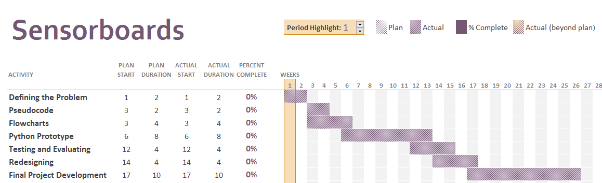
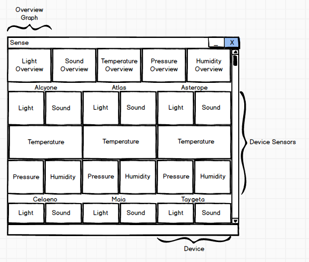
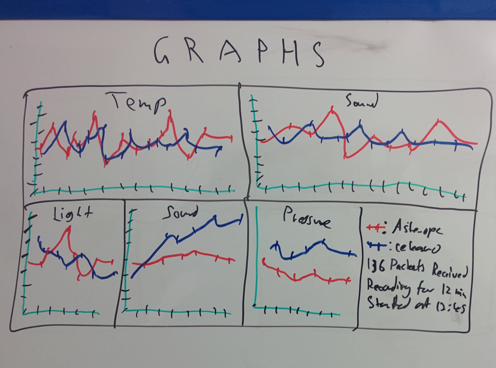
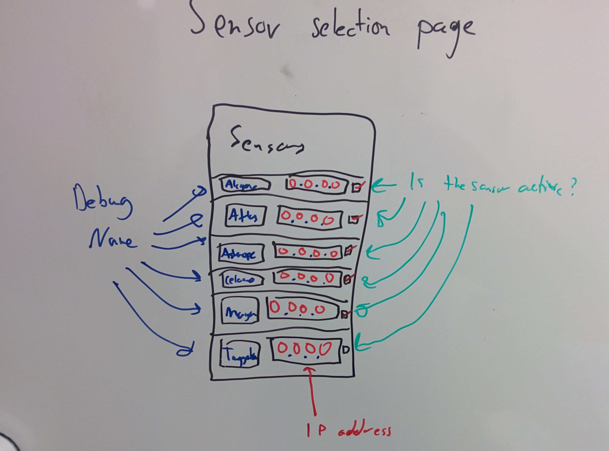
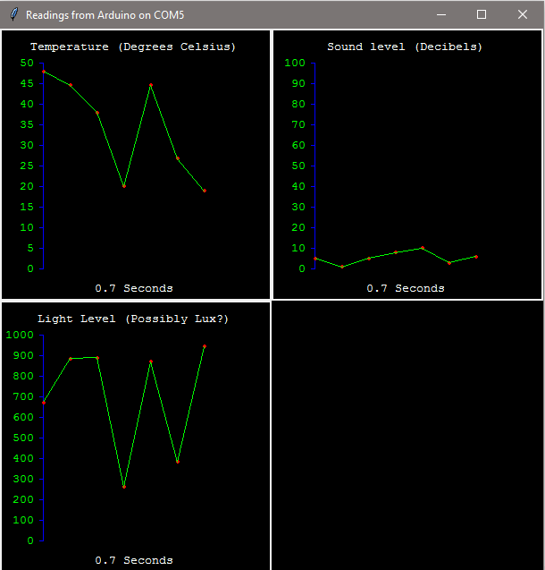
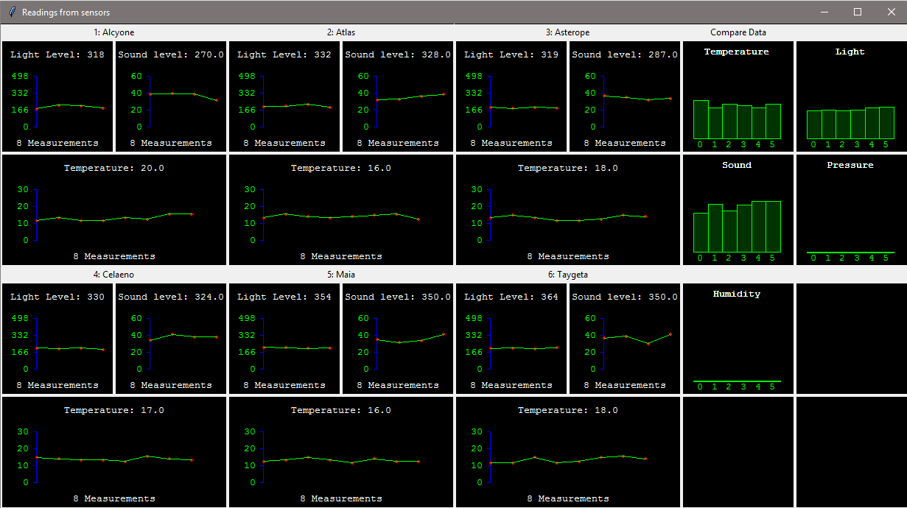
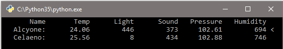
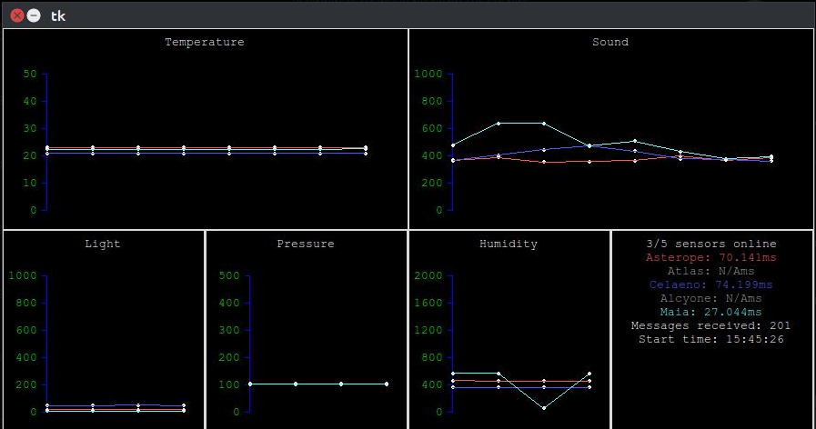

IoT
This is a HSC SDD/IPT project that uses a set of sensorboards to monitor climate data.
The main file you should run right now is gui.py, but it won't work unless you have the
sensorboards. The file fake_sensorboard.py simulates a fake sensorboard on
localhost:80.
If you've got an Arduino and want to look at the code, the Arduino code is in
sensorboard/sensorboard.ino.
Here is the original assessment notification, and here is the SDD course specification .
Contents
- Defining and Understanding the Problem
- Planning and Design
- Implementation
- Testing and Evaluating
- Appendices
-
Defining and Understanding the Problem #
Defining the Problem
Identifying the problem
Needs
There is a large industry need for data collection. A system that allows a company to remotely monitor atmospheric conditions would be of use where employee and customer comfort is necessary.
Objectives
My main objective is to create a graphical program to track and display temperature, light, sound, pressure and humidity data sent back from six sensors via a shared Wi-Fi network. The program will receive TCP headed packets containing space-separated values and display the data in a scientific format, as well as recommend changes to the climate, such as “turn the fans on” when the temperature is above a comfortable level, or “switch the lights off to save power” when the lights are not needed. These recommendations will be shown on the program display and through LEDs on the sensorboards.
Boundaries
The system will only collect data from the sensors available, will not collect data from any other means, and will not be able to effect any change, such as switching lights or air conditioning on or off.
Determining the Feasibility
Is it worth solving?
The problem is worth solving as there is yet to be a cheap IoT-style data collection device and software. Technology in general is leaning to the internet-enabled small device system, such as phones or smartwatches. I believe that this system will be a beneficial addition to this future.
Constraints
Budget
The price for the individual boards and all of the components are not covered by this project, as the scope of this project only concerns the software side of the project. The boards will be paid for by us, as they will have use outside of this project.
Operational
The product will be able to be run in any Windows/Linux/Mac environment. The user will need to have knowledge of networking and will have to be able to manually program in the target network SSID and password, and will have to be able to find the boards’ IP addresses on the network - this is a physical constraint of the wifi chip themselves. However, the product's target audience will most likely have these required skills, and if not, the user manual will be adequate.
Technical
There are several resources that are needed for this project. First of all, a prototyping board is needed so as to test different combinations of sensors and the interfaces between software and hardware. This will be done with a breadboard.
The printed circuit boards (PCBs) will need to be designed and printed based on the prototyping board, and the individual sensor modules, along with the Arduino Nanos, must be acquired. These will be purchased online, and the printed circuit boards will be made overseas at low prices and shipped here for testing and evaluating.
On the software side, I will need Python and the required modules listed in section 2.1. I will need a version control system (VCS) such as Git, and I will most likely use an integrated development environment (IDE) such as Pycharm.
I have all the required resources for this project, therefore it is technically feasible.
Scheduling
See appendix 5.1 for a Gantt Chart.
Alternatives
Another solution to this problem would be to have USB sensors that plug into a computer and send environmental data into a log. This would get around network problems such as connectivity and security/privacy issues, but it would not be able to compile data all at once – you would have to manually compile all of the logs post-collection. This would also mean that the sensors would have to be plugged into a computer - you would not be able to position them wherever you want, unlike network sensors.
Social and Ethical Considerations
Sound data collected is not actual recordings, it is the highest volume level collected in a set of around a thousand samples.
Light data collected is not a photograph or video recording, it is the current light intensity.
Design Specifications
The Developer’s Perspective
Datatypes
There will be a variety of datatypes used in the software, for example:
Integer Floating Point String List Light data Temperature data Window heading titles Measurement History Sound data Humidity data CSV database data List of graph points Message counter Pressure data Names of sensorboards List of sensorboards Variables
The program will need to use variables, and they are detailed in section 5.2.6.
Design Approach
I have chosen to use a combination of the Structured and the Agile approaches. This will allow me to accurately document the project, while also prototyping and responding to feedback.
Naming Conventions
Variables names will use Python's PEP-8 protocol for easy reading:
Object Convention Example Class names Camel case class SomeClass: ...Variable names Lowercase (underscored) num_sensors = 4Constant names Capital (underscored) SCREEN_WIDTH = 800Function names Lowercase (underscored) def print_data(): ...You can find more about PEP-8 at python.org.
The User’s Perspective
Screen Design Prototypes
See section 5.2.7 for an annotated storyboard.
Appropriate Messages and Icons
There will be no need for any pop up messages, but there may in the final product be a window for warnings and tips on how to perfect the climate conditions in a particular room.
Debug messages will be concise and relevant, and all icons used will be relevant and non-distracting.
Relevant Data Formats
Data will be formatted in metric SI units:
Temperature Celsius Light Lux Sound Decibels Pressure Pascals Humidity kgm-3 Ergonomic Issues
The black graphs with neon lines may have a chance of causing eye strain if the program is run in a low light environment. Users are notified of this in the manual.
Because the program does not require a large amount of user input, there are not many ergonomic or safety issues associated with it.
The User's Environment
For a user to run the product, they must have the following:
- A computer running Linux, Windows or Mac OS.
- Python 3.x with the dependencies.
- The OS must have a GUI (if you want to write a CLI, there's an API).
Originally the project was going to be built to a windows executable file, but I realised that this would impact on the portability of the program, and the target audience should have the skills necessary to install these dependencies.
Modelling
Representing the System
See section 5.2 for system models.
Communication
See section 5.3 for project meetings and logs.
Planning and Design #
Selection of Language
Given the reasons below, I have decided to create a prototype or proof-of-concept in Python using:
-
The
Tkgraphics library -
The
threadingmodule for multithreaded sensor inputs -
The
pyserialserial library for serial port testing -
The
socketlibrary for TCP communication. -
Python’s
mathandrandomlibrary
What experience do I have?
My primary knowledge and experience lies with Python (and Tk), and also a little of C++.
What are the language needs?
The language needs to have:
- Graphical canvas libraries
- Multithreading capabilities
- Network interface capabilities
- Serial capabilities for debugging the boards
-
The
Algorithms
See section 5.4 for algorithms and flowcharts.
Implementation #
General notes
This was probably the biggest project I've done, and I have learned much.
I came up with the idea after being briefly obsessed with the idea of the Internet of Things - tiny internet enabled devices inside everyday objects, all working together as a huge system. I already had experience in networking and Arduino (especially after January 2016 when I went to NCSS and did a course centering around Arduinos), and I didn't really want to do another game.
Inspired by one of last year's software projects, a drone controller, I wanted to make something useful. So, putting these two concepts together, I came up with this so far unnamed project - a monitoring application that can monitor its environment.
There are a lot of things you could do with this - especially if you were to integrate it with other things, like light switch controllers (especially ones like this). Unfortunately, it's not like I could go and ripping out light switches and replacing them with smarter ones, so I decided that this project's scope should only be monitoring, not enacting a change.
The one major bug I had with this project was when I was setting up the WiFi module on the boards. I used an ESP8266 module, and we bought six of them. They all appeared to be broken, but after about six hours of work my Dad and I discovered that it was a problem relating to the baud rate of messages being sent. This resulted in commit
#dd1350: "added in the wifi code after much gnashing of teethies".I went through a few interface designs before I decided on the current one. My main problem was how to fit five sensorboards, each with five sensors, onto a window that fits on to your screen nicely and isn't impossible to read. My two solutions for this were to either have five frames, each representing a specific sensor, and then split that up into five separate windows representing each type of data measured. This setup is shown in version 2.0, albeit with only three different environmental properties shown (temperature, light and sound).
However, this setup failed on two aspects: ease of reading and dynamic-ness. The graphs were tiny, and there were still another ten of them to fit on (pressure and humidity).
Also at this time I wasn't very satisfied about the way the program was functioning network-wise, so I completely recreated it from scratch to make version 3.0. This had no "GUI" as such, as it displayed its data through a command line, but the network improvements I made were huge. The main thing that I did was to move from the pure Python
socketto the higher-levelrequestslibrary - changing the sensorboard code so that the responses they sent were HTTP compliant. Using the higher level library, along withrequests'keep-aliveserver, allowed for sensors to disconnect and reconnect at any time - as well as the ability to run the program, and then turn the boards on. That helped a lot with debugging the boards; I could reboot or reupload code and keep the program running.However, I longed for the coming of the GUI. I tried a couple of services - Bokeh and Django to make a web application, Kivy to make a fancy interface, but none of them really fit the idea of what I wanted. Eventually I settled back to using Tk, but redesigned the interface: Instead of organising it by individual boards and then separating into graphs for each type of data collected, I organised it by the datatype first and put all the sensors onto the same graph. This allowed me to fit theoretically as many boards on at once, allowing for quite a few new design prospects.
There are still a few bugs left, and the display isn't quite as polished as I would like, but the program is in a beta/release stage now.
Interface Design
The target audience for this project were either people working in businesses looking for a data collection solution, or IoT developers that wanted a framework to build upon. Hence, the main thing that the interface needed was customisation options - It needed to have support for any number of sensors, and the colours and screen design had to be completely user configurable.
That was part of the reason why I chose Python/Tk as the language that the program would be written in - both of these are designed to be really easy to read and change.
I chose Tk's
gridlayout, as I thought that it was much easier to understand for anyone wanting to plug in sensor graphs (or, indeed, their own Tk apps). It also allows for a higher degree of customisation over their layout.The default colour scheme of the graphs (black with bright almost neon graph lines) was designed with as much reduce on eye strain in low-light environments as possible, whilst still allowing for easy reading; and, of course, it looks very aesthetic and tech-y. The graphs are aligned to a 5px grid for consistency, and the font is Courier New - the monospacing of the font allows for a uniform, grid based interface, with all characters aligning above each other.
Version two of the program was what I originally thought would be my final design, but it was too cramped and not dynamic enough, so I redesigned it to have all of the measurements from all of the sensors organised by data type as in version 4 of the program. This also meant that I could theoretically put as many sensors onto the program as I wanted - granting me the pluggable nature of the program that I wanted.
Program Development and Techniques
Code Generation
Debugging Output Statements
The program can be started from the command line with the -v argument, which enables a more verbose debug output.
There are six levels of debug prints, which loosely follow the Apache server style:
Debug -1TESTTest output sent by tests.py.Debug 0INFOInforms about generic information (most often just printing when a sensor has sent data) Debug 1OKInforms the user of important operations completing successfully. Debug 2WARNWarns the user about a possible error. Debug 3ERRORErrors that won’t necessarily cause the termination of the program, for example, when a sensorboard disconnects. Debug 4FATALThe highest level of error. Occurs when the program encounters an unrecoverable error and terminates.
Software Debugging Tools
The editor that I used to edit the Python code, Pycharm, contains many inbuilt tools to help the debugging of a program. Pycharm has the following capabilities:
- Breakpoints
- On-the-fly variable editing
- Code Stepping with multiple stepping abilities
In addition, Python itself contains
pydb, a python debugging tool, which also contains these features.
Documentation
Communication
See section 5.3 for project meetings and logs.
Testing and Evaluating #
Testing the Software Solution
Comparison with Original Specifications
The product turned out to be identical to the original idea on the inside, but the display and graphics are very different to what I originally imagined - but they are more effective than the original idea. My original idea was going to be more like this revision, but I feel that it turned out for the better with the final layout.
The product conforms to the original idea of an environmental data collection system, and I feel that its modular nature, expandability, and application in different fields has come out exactly the way I want it.
Levels of Testing
Level What I tested Module Sensor.read()can be tested for efficiency and reliabilityThe GraphFrameclass can be tested for efficiencyProgram Read cycle time can be tested for efficiency System System reliability tests Live Test Data
Because of the nature of this system, acquiring live test data is quite easy - all that needs to be done is link the sensorboards to the application, run the program, and run the tests on it.
Reporting on the Testing Progress
Test Requirements
To test this product, the sensors themselves are needed. I have five working sensorboards built to the specification described in the schematic, which I shall use to test the application.
I have also included a file
fake_sensorboard.py, which is able to emulate random signals from a sensorboard. This acts as a server running off localhost, and to connect to it you need only to point aSensorobject tolocalhost.Test Plan
To fully test this project, I will need to test both the software and the hardware counterparts. The tests will comprise of load testing, timing testing, and accessibility testing.
Test Plan Measurements Load testing Link all available boards and run the program. Ping time of boards compared to a lower load Application framerate Connection testing Link singular boards up and measure connection time to different WiFi networks Time taken for a board to connect to a WiFi network Ping testing Link singular boards up and measure time taken for various transmission tasks Time taken for a full read cycle Time taken for the sending process to finish Accessibility testing Utilise peer testing to evaluate the ease of use of the program Peer testing data Test Data and Expected Results
Test Expected Result Result Load Testing/Ping Little to no ping drop Average ping drop ~5ms, tested on all five sensors. Within acceptable limits. Load Testing/Framerate Little to no framerate drop No recordable FPS drop. Connection Testing/Connect Time ~10 seconds connection time
(ESP8266 specification)Averaged at 7.23 seconds - a very good result! Ping Testing/Read Cycle Less than a second Average time 212ms - easily within range. Ping Testing/Send Time Much less than a quarter of a second Collected in total almost half a million (424820) pings.
Average time 62ms, within range.Peer Testing/Survey Good outcomes ~93% of testers had positive feedback on application design. 55 people were tested, 35 of whom were experienced with computing. Recommendation
All tests reported that the application is able to function under the circumstances that it was built for.
Outstanding Bugs
These are bugs that I either did not have the time to fix or did not know the cause of.
Issue ID Symptoms Reason why left open Temporary workaround(s) #4 Sensorboards drop out if the application cancels a socket request.
Unsure of the cause of the bug; I assume it's related to the ESP8266 module and not my code. The board notifies you if this has happened: the green, red and blue lights will all be on continuously. #6 Python has a Too Many Files Open exception - this does not cause the program to terminate, as the exception happens in a separate thread, but it's possible that data is not written to the .csv files. Not enough time to fix this bug. None
Appendices #
Gantt Chart
System model
IPO
Input Process Output Sensor data Receive, decode, remap, format Formatted data in graph form Context Diagram
Data Flow Diagram
Structure Chart
System Flowchart
Data Dictionary
Name Type Format Description Example frame_width Integer XXX The width of a sensor frame 300 frame_height Integer XXX The height of a sensor frame 300 Measurement.temp Floating point XXX.X A temperature reading 22.5 Measurement.light Integer XXX A light intensity reading 600 Measurement.sound Floating point XXX.X A sound volume reading 400.8 Measurement.pressure Floating point XXX.XX A pressure reading 1024.0 Measurement.humidity Floating point XXX.X A humidity reading 503.6 Storyboard
The original storyboard for the prototype:
The full storyboard for the final application:
A storyboard for a possible future sensor selection menu:

Communication
Progress Meeting Agenda
Progress Meeting 1
- Progress
- Project Progress
- Problems Encountered
- Questions
- What are the “needs” of the project?
- Is it feasible?
- Structure
- Link with IPT
- Am I able to prototype in Python and design the final solution in C++?
- Questions from the interviewer
All topics in the agenda were discussed and all questions I had were answered. I have since decided that the final application should be in Python, not C++, and I am able to link with the IPT project.
- Progress
Progress Meeting 2
- Progress
- Version 2 of the program
- Thinking about Django
- Questions
- Should I make it a web app?
At this time I was thinking about Django integrations, and whether to make a web app. I came away from that meeting thinking that I should do a web app, but later decided against it.
- Progress
Progress Meeting 3
- Progress
- Version 4
- Have excellent networking framework
- Have excellent GUI
- Questions
- Various documentation questions
At this point, nearly all of the software was done, but I had not finished the documentation.
- Progress
Personal Log Book
What follows are the four major version updates. There is a much more lengthy list on the github repo commit list.
Version 1.0
(short commit hash: #f8a74d2 ) This was the first version of the application. It felt more like a proof of concept than anything else.
Features/Improvements:
- Graphs light, temperature and sound from a single board on a serial port
Problems:
- Only one board
- Graph scale is very inaccurate
- No network capabilities
- Only three sensors - no pressure or humidity
Version 2.0
(short commit hash: #1925437 ) Version 2 was the first version where I felt that the project was on track - most of the features were there, and it all worked.
Features/Improvements:
- Graphs temperature, light and sound from six different boards over the network.
- Has "Comparing graphs" which show you relative differences in the graph levels.
- Could use both serial and network connections.
Problems:
- Still only three data types
- Interface was clunky and scrolling was difficult
- UI felt cramped and the graphs were hard to read
- Loads of bugs
Version 3.0
(short commit hash: #9638095 ) In version 3, I stripped the application down and rebuilt it without a GUI.
Features/Improvements
- Works as a pure console application
- Works dynamically with any number of boards
- Very fast
- Reliable data transfers
- Stores data in .csv files
Problems:
- No GUI
- No graphs
Version 4.0
(short commit hash: #49af37e ) Version four combined the reliability and network benefits of version 3 with an updated graphical display as in version 2.
Features/Improvements
- Allows for boards to disconnect and reconnect
- Dynamic
- Very fast
- Very reliable
- List of online boards
- Colour coded
- Better measurement scales
- Stores data in .csv
- Shows ping time of boards
Problems:
- I would have liked the fancy comparation graphs from version 2
- Sensors stop responding if a request is cancelled before a response can be made (bug #4)
Algorithms and Flowcharts
The subroutine to read data from a sensor
BEGIN ReadDataFromSensor(measurement_history) temp_list = an array IF connected via serial character = a single char WHILE character is not a newline (newline terminates a measurement) read from serial into character append character to temp_list ENDWHILE ELSE IF connected via network receive 100 characters of data into temp_list ENDIF append the data in Measurement objects into measurement_history RETURN measurement_history END ReadDataFromSensorThe subroutine to update a graph
BEGIN UpdateOverviewGraph(sensor_list, data_to_graph, graph_title) delete all objects on graph create the blue baseline create the graph title using graph_title FOR sensor_num = 0 TO length of sensor_list sensor = sensor_list[sensor_num] CASEWHERE data_to_graph is temperature: map according to min/max temperature values light: map according to min/max light values sound: map according to min/max sound values pressure: map according to min/max pressure values humidity: map according to min/max humidity values ENDCASE create the sensor id text draw the sensor level rectangle NEXT sensor_num END UpdateOverviewGraphThe subroutine to draw the base of a graph
BEGIN DrawSensorGraph(point_list, increment, title) delete all objects on graph create title text create graph axis create graph ticks create # of measurements text FOR point_number = 0 TO length of point_list create a point on the graph using point_list[point_number] NEXT point_number END DrawSensorGraph